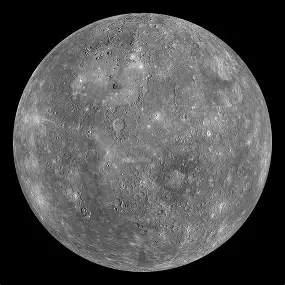
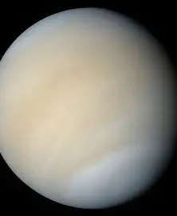
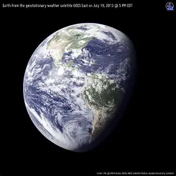
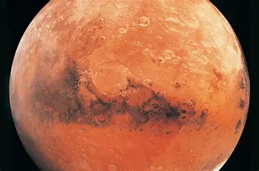
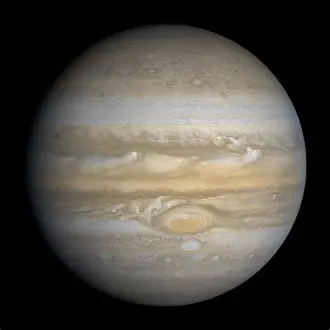
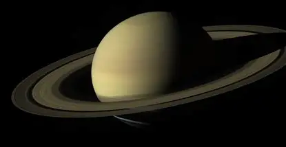
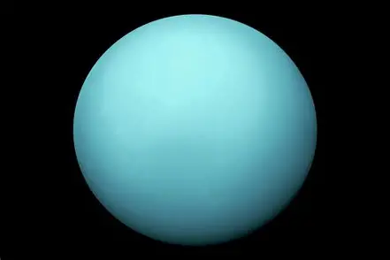
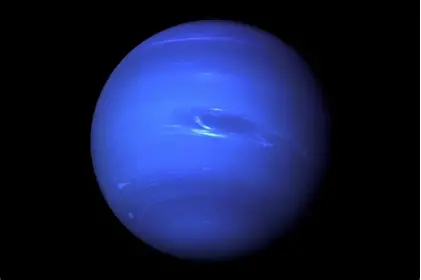

Planets of the Solar System
The
NASA
defines a planet as a celestial body that orbit the Sun, is spherical in
shape, and has cleared its orbital path of other debris.
Mercury
Mercury is the smallest planet and closest to the Sun. It has no atmosphere
and extreme temperatures.

Venus
Venus is similar in size to Earth but has a thick,toxic atmosphere and is
the hottest planet due to a runaway greenhouse effect.

Earth
Earth is the only known planet to support life. It has a balanced and
abundant water.

Mars
Known as the Red Planet, Mars has polar ice caps and the largest volcano in
the solar system: Olympus Mons.

Jupiter
Jupiter is the largest planet, a gas gaint with a famous storm called th
Great Red Spot.

Saturn
Saturn is best known for its prominent ring system. It is also a gas gaint
like Jupiter.

Uranus
Uranus rotates on its side and has a pale blue colour due to methane in its
atmosphere.

Neptune
Neptune is the farthest planet from the Sun and has the strongest winds in
the solar system.
